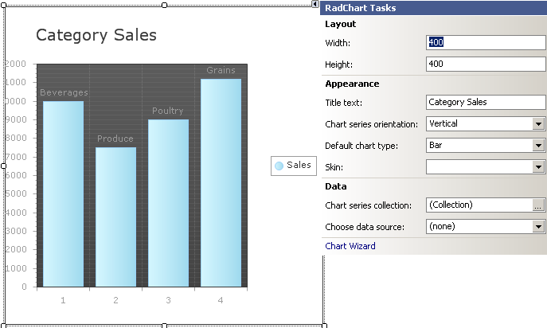

Quick Start: Create a Bar Chart with Simple Static Data
This Quick Start tutorial is designed to have you quickly up and running with a working RadChart application.
In the process of creating a basic bar chart you will be introduced to some of the features of RadChart.
You will populate the chart with static data and modify several properties that affect chart appearance.
Create a Windows Application
From the Visual Studio File menu select New | Project.
Select the "Windows Application" and enter a location path for the project.

From the Toolbox drag a RadChart component to the form. The project should now look like the figure below.

Populate Chart Data
Click the RadChart's SmartTag.
From the SmartTag "Data" section, click the ellipses for the Chart Series Collection.
Click "Series 1" in the members list on the left, then locate the Name property in the property window.
Change the Name property to "Sales" and the DefaultLabelValue to "#ITEM". Name
will be the series name that shows up in the legend. DefaultLabelValue will display the name of each item in the
series instead of the item value.Locate the Items property in the property window.
Click the ellipses button of the Items property to open the ChartSeriesItem Collection Editor.
Click the Add button to add a new Item.
In the property window for the new item, change the Name property to "Beverages".
Change the YValue property to "10000".

Repeat the Add Item steps to add 3 new items.
Replace the properties for the three new items as follows.:
Label=Produce, YValue =7500
Label=Poultry, YValue =9000
Label=Grains, YValue =11200
Click OK to close the ChartSeriesItem Collection Editor.
Click "Series 2" in the ChartSeries Collection Editor.
Click the Remove button to remove Series 2.
Click the OK button to close the ChartSeries Collection Editor.
The chart will display the new data using the default formatting.

Format the Chart Using the SmartTag
Click the RadChart's Smart Tag
Change the Layout section Height to 400px.
In the Appearance section, change the Title Text entry to "Category Sales".
The SmartTag options and resulting chart should look like the screen shot below.
Format the Chart
Click the Chart Wizard link at the bottom of the RadChart Tasks menu.
Click the Axis Tab.
Locate the Visual Properties section of the Axis tab.
On the __Select Axis drop down__list select the X Axis. In the __Axis Title__entry enter
"Product Categories". Uncheck __Show Ticks__to remove the tick marks from the bottom of the chart.On the __Select Axis drop down__list select the Y Axis. Uncheck __Show Ticks__to remove the tick marks on the left hand side of the chart.

Click the Labels, Legend and Title tab
Locate the Legend section.
Uncheck the Visible check box. This will remove the Sales legend from the right side of the graph

On the Skins tab select the Deep Blue skin.

Click the OK button to close the wizard.
In the properties window, locate __PlotArea.XAxis.AxisLabel.TextBlock.Visible__and set it to "True".

Run the application to view the finished chart. It should look like the screen shot shown below.